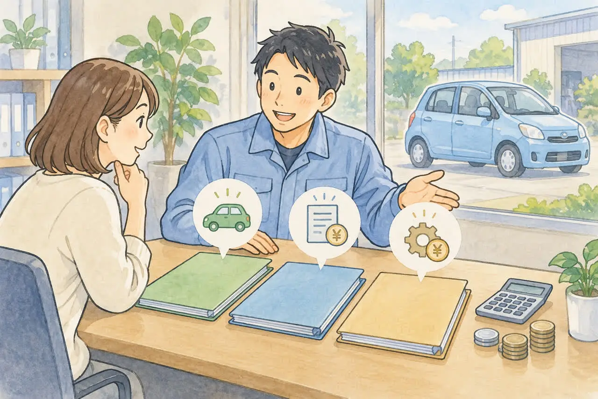
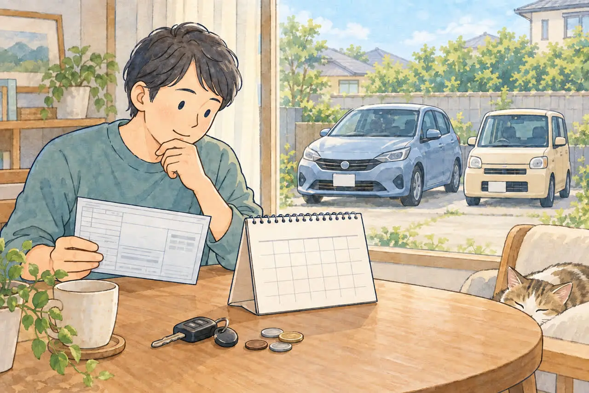
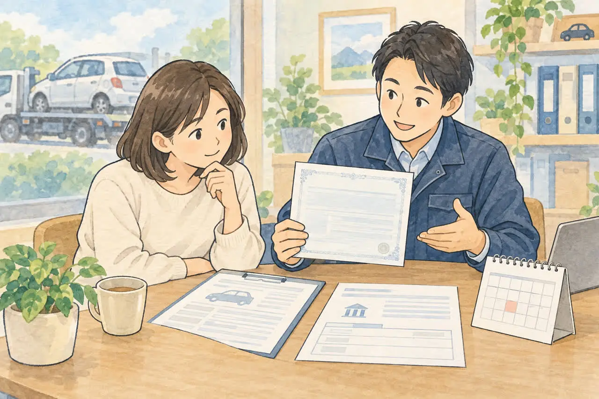

廃車のお金のことで迷っている方へ
廃車にするとお金は戻ってくる？
自動車税・重量税・自賠責の還付金
公開
こんにちは、東京都足立区江北で自動車解体・廃車買取をしている「大崎商店 環七店」です。
「車を廃車にしたら、払ったお金が少しは戻ってくると聞いたけれど、本当？」
「自動車税、重量税、自賠責保険…何がどう戻るのかわからない」
廃車のご相談では、こんな質問をよくいただきます。
結論からお伝えすると、車を廃車にすると、条件を満たせば、自動車税・自動車重量税・自賠責保険の3つで、お金が戻ってくることがあります。 ただし、戻る条件や、戻らないケースがそれぞれ違います。
この記事では、3つのお金の違いと、戻る条件、受け取り方を、やさしくご紹介します。
まずは3つの違いを表で確認しましょう

3つのお金は、名前が似ていても、別々の制度です。戻る条件も、手続きの先も違います。
| 自動車税（普通車）／軽自動車税 | 自動車重量税 | 自賠責保険 | |
|---|---|---|---|
| 戻るお金の名前 | 還付金 | 還付金 | 返戻金（へんれいきん） |
| 戻る条件 | 普通車：廃車（抹消登録）をした月の翌月から3月までの分 軽自動車：戻らない | 適正に解体し、永久抹消登録・解体届出等と同時に申請。制度上の車検残存期間が1か月以上ある場合 | 解約日から満期日まで、1か月以上残っている場合 |
| 手続きの先 | 普通車：都道府県の税窓口 軽自動車税：市区町村 | 普通車：運輸支局等 軽自動車：軽自動車検査協会 いずれも解体に伴う手続きと同時 | 保険会社 |
| 車検が切れている車 | 戻ることがある | 戻らない | 満期が残っていれば戻ることがある |
| 廃車だけで自動的に戻る？ | 東京都は通知が届く | いいえ。申請が必要 | いいえ。解約の手続きが必要 |
それぞれ、くわしく見ていきましょう。
① 自動車税：普通車は月割りで戻ります

自動車税は、毎年4月1日時点の車の所有者にかかる、都道府県の税金です。販売店などが所有権を留保している割賦販売の場合は、使用者が納税義務者になります。
普通車は、年度の途中で廃車（一時抹消登録または永久抹消登録）にすると、抹消登録をした月の翌月から、翌年3月までの分が月割りで還付されます。すでに1年分を納めている場合に戻るお金です。
たとえば、10月中に抹消登録が完了すると、11月から翌年3月までの5か月分が還付の対象です。
ポイント
- 基準になるのは、車を引き取った日や、解体した日ではなく、抹消登録をした月です。車を引き取っても、手続きが完了していなければ、還付の対象になりません。
- 東京都では、還付金が発生すると通知が送られるため、原則として別に申請する必要はありません。未納の都税がある場合は、そちらに充当されます。
- 車検が切れている車でも、自動車税は還付されることがあります。車検の期限とは関係なく、抹消登録の月で決まります。
軽自動車税は戻りません
軽自動車は、軽自動車税（市区町村の税金）です。毎年4月1日時点の所有者に1年分が課税され、年度の途中で廃車にしても、月割りで返してもらうことはできません。
4月2日以降に廃車にした場合は、その年度の軽自動車税は戻りません。翌年度の課税を避けるために、3月末までに廃車の手続きを終えることが大切です。
② 自動車重量税：解体して、車検が残っていれば戻ります
自動車重量税は、新車登録や車検のときに納める、国の税金です。自動車税とは別の税金で、普通車にも軽自動車にもあります。
重量税の還付を受けるには、次の条件を満たす必要があります。
- 自動車リサイクル法に基づいて車を適正に解体し、解体を事由とする永久抹消登録または解体届出などと同時に、還付を申請したこと
- 制度上の車検残存期間が1か月以上あること
普通車は、一時抹消していない車なら永久抹消登録、一時抹消済みなら解体届出の際に申請します。軽自動車は、車検証の返納を伴う解体届出（解体返納）、または返納後の解体届出の際に申請します。
車検がすでに切れている車は、還付を受けられません。 また、車を売って使い続ける場合や、一時抹消登録だけの場合は、解体を事由とした還付の対象ではありません。
残り期間を数える基準
重量税の車検残存期間は、次の「確定日」の翌日から車検満了日までで計算し、1か月未満の端数は切り捨てます。
| 車の状態 | 計算の基準となる確定日 |
|---|---|
| 普通車・一時抹消していない | 永久抹消登録日 |
| 普通車・一時抹消済み | 一時抹消登録日と報告受領日のうち、遅い日 |
| 軽自動車・車検証を返納していない | 解体返納による車検証の返納日 |
| 軽自動車・車検証を返納済み | 車検証の返納日と報告受領日のうち、遅い日 |
「報告受領日」は、引取業者の引取報告を国土交通大臣が受けた日で、解体完了日とは異なります。引き取り日に車検が1か月残っていても、必ず還付されるとは限りません。具体的な日付と還付の可否は、手続きの状況に合わせて確認します。
申請のしかた
- 申請するのは、使用済自動車の最終所有者です。
- 引き取り業者から解体が完了した連絡を受けたあと、永久抹消登録（または解体届出）の手続きと同時に、還付の申請書を出します。
- 後から、還付の申請だけをすることは、原則できません。
- 申請から還付金が支払われるまでは、おおむね2か月半程度かかります。
③ 自賠責保険：解約の手続きをすると戻ります

自賠責保険は、原則として公道を走る車に加入が義務付けられている保険です。廃車にしても、自動的には解約になりません。 保険会社に連絡して解約の手続きをすると、残りの期間に応じて、返戻金が戻ってきます。
条件は、解約日から満期日まで、1か月以上の期間が残っていることです。保険期間が始まる前に解約しても、全額は戻らず、諸経費が差し引かれます。
手続きのポイント
- 自賠責保険証明書が必要です。車検証と一緒に保管しているので、なくさないようにしましょう。
- 契約している保険会社に連絡して、解約の手続きをします。廃車による解約では、抹消登録や車検証の返納などを確認できる書類も必要です。解約できる条件と必要書類を事前に確認してください。
- 解約日は、車の引き取り日や抹消登録日と同じとは限りません。たとえば損保ジャパンでは、必要書類の受理日、または所定のオンライン申請日が解約日になります。
- 車を売却して、新しい所有者が使い続ける場合は、扱いが変わることがあります。保険会社に確認してください。
任意保険も、保険会社に連絡して、解約や中断の手続きを確認しておきましょう。
「残り月数」は、手続きの時期で変わります
重量税の還付金も、自賠責保険の返戻金も、日割りではなく、残りの月数などに応じて計算されます。
そのため、手続きの時期が月の区切りをまたぐと、戻る金額が減ることがあります。 たとえば、残りの月数が1か月減る区切りを過ぎると、その分が減ります。また、残りの期間が1か月を切ると、還付も返戻もなくなります。
車を引き取った日が、そのまま計算の基準日になるわけではありません。書類の準備や、解体・申請に日数がかかります。車検や自賠責の期限が近い場合は、早めにご相談ください。
こんなときは、手続きの前に確認しましょう
- 車検が切れている：重量税の還付は受けられません。自動車税の還付や、自賠責保険の返戻金は、条件を満たせば戻ります
- ローンが残っている、所有者が販売店やローン会社になっている：申請や受け取りに、所有者の書類が必要になることがあります
- 所有者が亡くなっている：還付金や返戻金の受取人、必要な書類が変わります。くわしくは「亡くなった家族の車を廃車するときの手続き」の記事をご覧ください
- 事故車や動かない車：還付の条件は同じです。くわしくは「足立区で事故車を買い取ってもらうには？」の記事をご覧ください
よくある質問
Q. 「月割り」と「満了日までの残り」は、どう違いますか？
A. 自動車税は「何月に抹消したか」、重量税と自賠責は「期限まで何か月残るか」で考えるとわかりやすくなります。「満了日」は、車検や保険の期限が終わる日のことです。
例1：普通車の自動車税は、月末をまたぐと変わります
その年度の自動車税を1年分納めている普通車を、2026年10月に抹消する例です。
| 抹消登録が完了した日 | 還付の対象になる期間 |
|---|---|
| 10月5日 | 11月〜翌年3月の 5か月分 |
| 10月30日 | 11月〜翌年3月の 5か月分 |
| 11月2日 | 12月〜翌年3月の 4か月分 |
同じ10月中なら、月初でも月末でも対象の月数は同じです。 11月に入ってから抹消すると、1か月分少なくなります。10月に車を引き取っても、抹消登録が11月なら4か月分になります。未納の税金がある場合は充当されることがあります。軽自動車税には、この月割り還付はありません。
例2：重量税は、車検の期限までの「丸々残る月数」で考えます
車検の期限が 9月30日、2年車検で納めた重量税が 24,600円 の普通車を例にします（年は省いています）。一時抹消はしておらず、適正な解体後、永久抹消登録と同時に還付申請する場合です。
| 永久抹消登録日 | 残り期間を数える範囲 | 還付計算に使う月数・金額 |
|---|---|---|
| 5月20日 | 5月21日〜9月30日：4か月と10日 | 4か月分：4,100円 |
| 6月20日 | 6月21日〜9月30日：3か月と10日 | 3か月分：3,075円 |
1か月未満の端数は切り捨てます。上の例では、24,600円 × 残り月数 ÷ 24か月で計算しています。実際の金額は、納付した重量税額や車検期間によって異なります。
重量税は「月が変わったら必ず1か月分減る」という計算ではありません。 車検の期限と、本文で説明した「確定日」の組み合わせで決まります。一時抹消済みの車や軽自動車は、基準の日も異なります。
例3：自賠責は、車を引き取った日ではなく「解約日」が大切です
自賠責の満期が 2026年12月20日 の契約を例にします。
| 保険会社での解約日 | 満期までの残り | 返戻金の目安 |
|---|---|---|
| 10月15日 | 2か月以上、3か月未満 | 2か月の区分で計算 |
| 10月25日 | 1か月以上、2か月未満 | 1か月の区分で計算 |
| 11月25日 | 1か月未満 | 返戻金なし |
同じ10月中でも、解約日によって返戻金の区分が変わることがあります。 10月15日に車を引き取っても、解約日が10月25日になれば、上の例では1か月の区分になります。
自賠責の返戻金は、支払った保険料を単純に月数で割った金額ではありません。契約期間・車種などに応じた返戻金表で決まるため、実際の解約日と金額は契約先の保険会社に確認してください。
Q. 廃車にすれば、自動的にお金が戻りますか？
A. 制度によって異なります。普通車の自動車税は、東京都では還付が発生すると原則として通知が自動的に送られます。重量税は還付申請、自賠責保険は解約手続きが必要です。軽自動車税に月割り還付はありません。
Q. 車検が切れていても、お金は戻りますか？
A. 重量税は戻りません。自動車税（普通車）は、抹消登録をした月で決まるので、戻ることがあります。自賠責保険も、解約日から満期まで1か月以上残るなど、条件を満たせば返戻金の対象です。
Q. 軽自動車でも、お金は戻りますか？
A. 軽自動車税は、年度の途中で廃車にしても戻りません。重量税と自賠責保険は、普通車と同じ条件で戻ることがあります。
Q. 一時抹消でも、お金は戻りますか？
A. 自動車税は、一時抹消でも、永久抹消でも、抹消登録をした翌月から月割りで還付されます。重量税の還付は、解体を事由とした永久抹消登録（または解体届出）と同時に申請するものです。
Q. いつ廃車にするのが、いちばん得ですか？
A. 自動車税は、4月1日時点の所有者にかかるため、3月末までに抹消登録を完了すると、翌年度の課税を避けられます。重量税と自賠責は、残りの期間が長いほど戻る金額が多くなります。手放すと決めたら、早めの手続きがおすすめです。
大崎商店の場合：受け取り方を選べます
ここからは、足立区の大崎商店の場合をご紹介します。上でご紹介した還付金・返戻金の受け取り方について、当店では、次の2つの方法をご案内しています。
方法1：買取価格に含めて、手続きを当店にお任せいただく
重量税の還付金・自賠責保険の返戻金の見込額を、買取価格に含めて、手続きを当店にお任せいただく方法です。車を当店へ譲渡していただき、還付の申請・受領の委任や、自賠責保険の契約内容に応じた変更・解約など、必要な手続きを当店が行います。譲渡証明書だけで、すべての還付・解約手続きが済むわけではありません。
買取価格に含めた還付金・返戻金は、当店が受け取る扱いになります。お客様に同じ金額が別途支払われるわけではありません。 お支払い前に、含まれる金額と手続きの内容をご説明します。
方法2：ご自身で手続きして、受け取る
買取価格に含めず、ご自身で必要な手続きを行って受け取る方法も選べます。書類の準備や申請をご自身で行う必要があり、手間はかかりますが、条件を満たす還付金・返戻金を、ご自身で受け取れます。
ご自身で受け取るご希望は、車の譲渡や廃車の手続きを進める前にお知らせください。 特に重量税は、最終所有者が申請する制度で、解体に伴う抹消登録・届出と同時の申請が必要です。当店へお任せいただく手続きと、ご自身で行う手続き、申請者・受取先を事前に確認します。
当店では、手続きと受け取りをお任せいただくケースが多くなっています。ご希望は、買取のご相談時にお知らせください。
詳しくは「足立区で事故車を買い取ってもらうには？動かない車でも大丈夫」の記事をご覧ください。
お金のことも、大崎商店にご相談ください
廃車のときのお金は、3つの制度が別々で、少しわかりにくいかもしれません。車検証と自賠責保険証明書を見れば、いつまで残っているか、どのお金が戻りそうかを、おおよそ確認できます。まずはお電話で、車種と、車検や自賠責の期限をお知らせください。
- 廃車手続きの代行・解体の費用は無料
- 買取価格がつかない車も、環七店から片道約30分圏内は引き取り無料
- 買取価格がつく車は、圏外でも、所在地と車の状態によっては無料で引き取り（事前にご案内します）
- 車種や状態によっては、引き取り当日その場で現金買取も可能
大崎商店 環七店
電話：03-3854-4141
〒123-0872
東京都足立区江北7丁目1−3
営業時間：月〜土 10:30〜18:00
休業日：日曜・祝日
環七沿い／舎人ライナー
西新井大師西駅
大崎商店 入谷店
電話：03-3899-2837
〒121-0836
東京都足立区入谷7丁目5−11
営業時間：月〜土 9:30〜17:30
休業日：日曜・祝日・第2土曜
引き取りやご相談のお電話は、環七店がスムーズです。お電話の際は、「廃車のお金について」とお伝えください。車検証と自賠責保険証明書をお手元にご用意いただくと、ご案内がスムーズです。
※掲載のイラストはAIで作成したイメージです。実際の店舗・車両・相談風景を撮影したものではありません。
参考：東京都主税局・自動車税のよくある質問／国税庁・自動車重量税の廃車還付／損保ジャパン・自賠責保険の解約返戻金／足立区・軽自動車税／軽自動車検査協会・還付申請の時期／国税庁・重量税の廃車還付Q&A（申請・代理受領・最終所有者）／国税庁・車検残存期間と還付額の計算